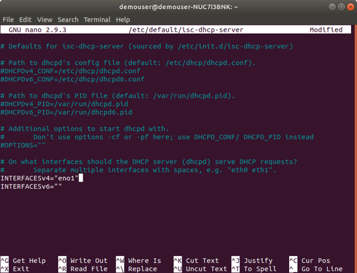
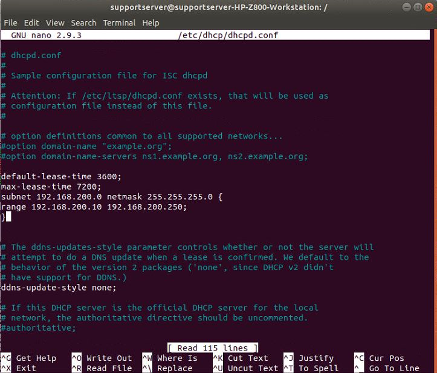

Install DHCP Server
In Quuppa systems, the Locators run a Dynamic Hosting Configuration Protocol (DHCP) client to receive IP addresses from the DHCP server. This means that in addition to installing the QPE, you should also set up a DHCP server. The steps below will guide you through the process.
- Install a DHCP server. In this guide we will install the ISC DHCP server.
sudo apt-get install isc-dhcp-serverTip: It's not necessary to run the DHCP server on the same server as the Quuppa Positioning Engine. It can also be run anywhere in the network, as long as it is configured to provide the IP address to the Locators. - Add network interface information by editing the isc-dhcp-server file:
sudo nano /etc/default/isc-dhcp-serverSpecify the name for the Ethernet network interface that you want to use, making sure to add it to the
INTERFACESv4=line (the Quuppa Locators use IPv4). You can check the available interfaces fromifconfig(see the Configure the Network Settings section for more details).In this example, we specified the following:
INTERFACESv4=”eno1”.
Save changes (Ctrl + O) and exit (Ctrl + X).
- Configure DHCP:
sudo nano /etc/dhcp/dhcpd.confAdd an IP range the DHCP server will serve out. See the example below.
Add the lines:
subnet 192.168.200.0 netmask 255.255.255.0 { range 192.168.200.10 192.168.200.254; }
After you have made the changes, save and exit.
Note: This is a very basic DHCP configuration. If you want to use DHCP options for QPE discovery, you need to configure the options here. Please refer the Network Configuration Guidelines for Quuppa Systems documentation for more information and the ISC DHCP server documentation for more advanced configurations. - Restart the DHCP server by booting the machine or by running:
sudo service isc-dhcp-server restart - Verify that the DCHP server has restarted by checking its status:
sudo service isc-dhcp-server status